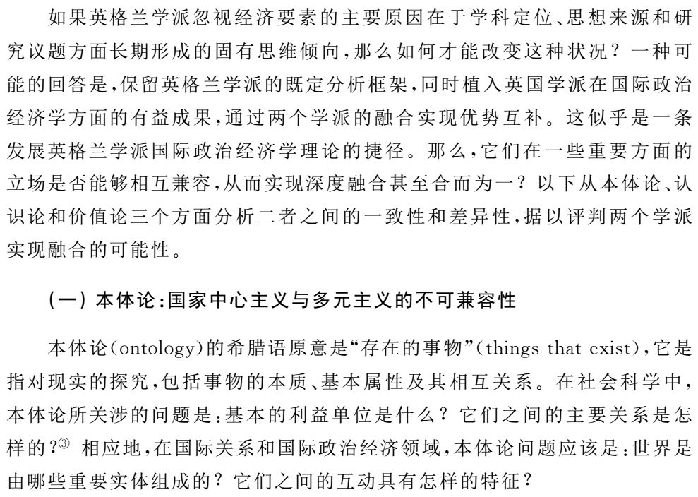
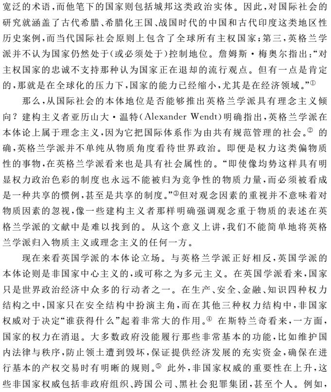
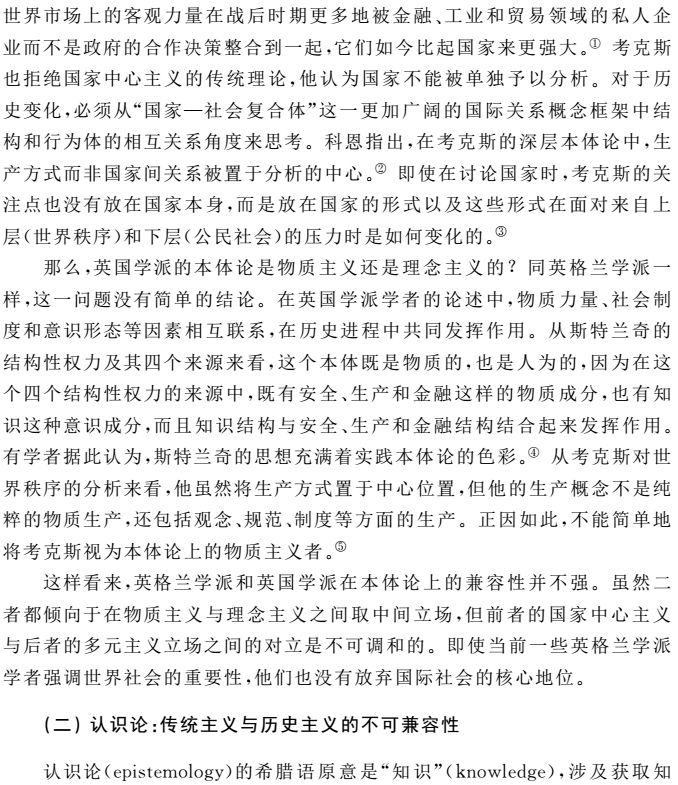
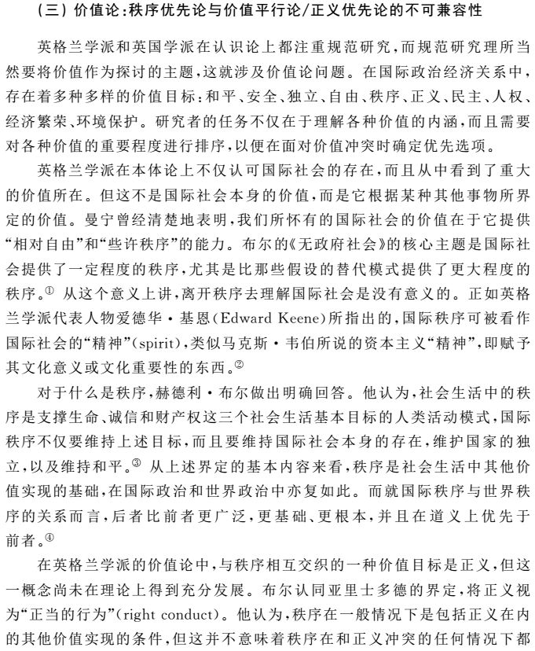
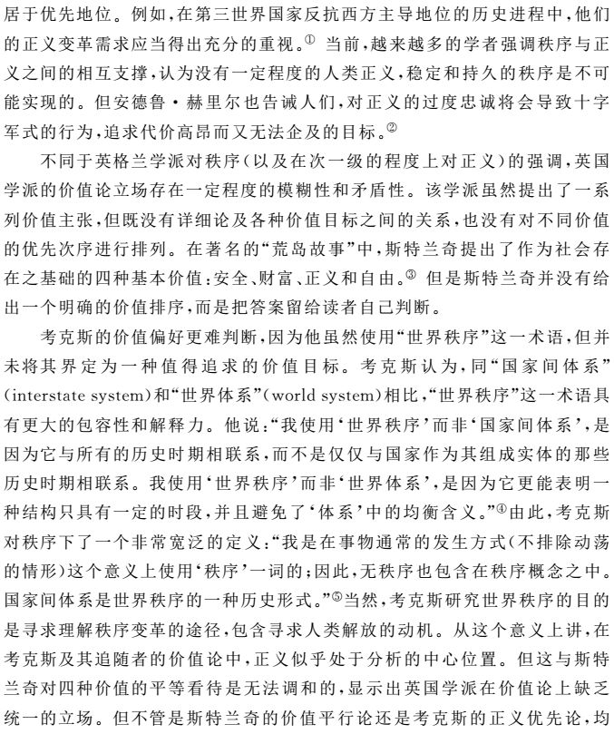
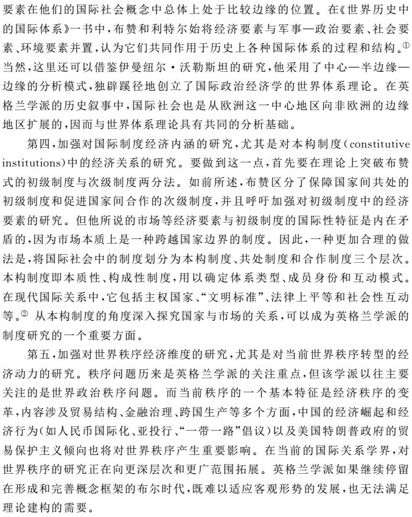

收录于合集
马国林
**
**
兰州大学管理学院 、兰州大学中亚研究所讲师
《国际政治研究》2018年第2期 ，国政学人（guozhengxueren）编辑首发
内容提要：
英格兰学派的国际社会概念内含重要的经济要素， 但该学派未能发展出系统的国际政治经济学理论。与英国学派的比较表明，主要原因在于英格兰学派在学科定位、思想来源和研究议题上长期形成的思维倾向。在学科定位上，该学派坚持国际关系的研究对象是当代国家间政治关系；在思想来源上，该学派注重从国际法、政治哲学和世界历史成果中汲取养分；在研究议题上，该学派集中关注国际社会的政治和战略维度，探讨社会、制度、秩序三者之间非经济的关联性。鉴于英格兰学派与英国学派在本体论、认识论和价值论方面存在着相当程度的不可兼容性，二者难以实现深度融合。与英国学派进行对话并适当扩展自身的研究议程，当是英格兰学派今后发展优先考虑的方向。
关键词：
国际政治理论 英格兰学派 英国学派 国际政治经济学
一般认为，国际社会概念是国际关系英格兰学派最为持久的理论贡献。该学派的奠基人、伦敦政治经济学院著名学者马丁·怀特(Martin Wight)认为，英格兰学派所偏好的理性主义（格劳秀斯传统）强调和关注的是国际交往要素，其典型表现形式是“外交和商业”。该学派最有影响的理论家、牛津大学蒙塔古·伯顿讲席教授赫德利·布尔明确指出，格劳秀斯传统是从国际社会的角度来描述国际政治的，认为最典型的国际行为是贸易（或者更笼统地说，是一国与另一国之间的经济和社会交往）。 由此看来，经济要素在英格兰学派的核心概念中处于重要地位。 不仅如此，鉴于其相对完备的分析框架、长期积淀的历史厚度和清晰明确的伦理取向，英格兰学派发展国际政治经济学还具有自身的独特优势和潜力。从逻辑上讲，该学派理应发展出一套系统的国际政治经济学理论。
尽管如此，英格兰学派却长期忽视国际关系中的经济问题，这种忽视也常为学界所诟病。 早在１９８１年，首次提出“英格兰学派”这一称谓的英国威尔士学者罗伊·琼斯就曾指出，“不对贫困、商品价格、货币改革等所谓的‘世界问题’进行苦苦思索”是这一学派的一大特征。 大约十年之后， 澳大利亚国立大学J.D.B．米勒教授强调，在分析国际社会中的各项原则和制度时，无论是怀特还是布尔都没有论及国际社会中一个必不可少的部分，即涉及国际贸易和投资的经济联系网络。２５ 年之后，英格兰学派当前最有影响的代表人物巴里·布赞不无遗憾地写道：“英格兰学派失于与国际政治经济学的联结。”直到最近，英格兰学派的另一位代表人物、现 任 牛 津大学蒙塔古 · 伯顿 讲席教授安 德 鲁 · 赫里 尔 还在抱怨，赫德利·布尔的著作倾向于低估政治经济问题。
当然，说英格兰学派忽视经济要素，并不是说该学派学者对经济问题不感兴趣，或者说他们的研究从不涉及经济领域。布尔的学生、英格兰学派第三代的代表人物约翰·文森特对人权与经济发展的论述、剑桥大学教授詹姆斯·梅奥尔对经济民族主义与世界秩序的研究、布里斯托尔大学教授张勇进对中国进入国际社会的经济进程的考察，以及安德鲁·赫里尔对经济全球化与不平等问题的探讨，都启发了人们对相关问题的思考。然而，在英格兰学派的文献中确实缺少对世界政治与经济互动关系的系统考察，在这一学派有影响的学者当中亦无人对此进行一以贯之的持续研究。
忽视经济要素对英格兰学派造成了理论和现实两方面的消极影响。 一方面，当代世界政治与经济关系越来越紧密，忽视经济问题妨碍了英格兰学派对世界秩序的深入和全面理解；另一方面，作为具有深厚积淀的国际关系理论流派，英格兰学派具有发展成为大理论的潜质，但其核心概念中内含的关键要素如果长期得不到充分发掘，其理论发展前景也将受到制约。
那么，英格兰学派为什么没有系统研究世界政治与经济的关联性问题，从而发展出自己的国际政治经济学理论？ 对此，以往的研究从专业背景、研究方法和分析层次三个方面进行解释。为了更好地探讨这一问题，本文选取国际政治经济学英国学派（以下简称英国学派）进行对比分析。以英国伦敦政治经济学院蒙塔古·伯顿讲席教授苏珊·斯特兰奇和长期在国际劳工组织任职的加拿大学者罗伯特·考克斯为代表的英国学派，同英格兰学派一样产生于冷战时期，现已发展成为与国际政治经济学美国学派并立的国际政治经济学理论流派，其成功经验值得借鉴。通过比较可以发现，英格兰学派忽视经济要素的主要原因在于学科定位、思想来源和研究议题方面长期形成的固有思维倾向。这种倾向不可能通过与英国学派的深度融合得到解决，但二者的对话则是必要和可行的。 本文的分析不仅对于促进英格兰学派国际关系理论的发展具有明确的指向意义，而且对于充实和完善国际政治经济学的理论框架和研究议题具有一定的参考价值。
一、 对英格兰学派忽视经济要素的传统解释
根据一些学者的推测，英格兰学派忽视经济要素的主要原因可能在于三个方面： 一是该学派的代表学者没有经济学的专业背景，他们无意也无法从经济角度研究国际关系；二是该学派秉持不合经济学主流的传统主义方法，这对其探讨经济问题具有制约作用；三是该学派对国际问题的思考集中在全球层次和初级制度层次，从而使得观察地区国际社会和次级制度中的经济发展变得非常困难。 那么，这三种因素各自的解释力究竟如何？ 如果将它们结合起来，是否能够提供一种关于忽视原因的全面解释？
（一）经济学专业知识的缺失
巴里·布赞认为，对英格兰学派与国际政治经济学之间缺乏联结的最明显解释或许是，该学派的代表学者基本上都不懂经济，而且对经济学研究也不感兴趣。“大多数英格兰学派的奠基人都是政治学理论、国际法和国际政治专业出身，他们并不善于研究经济问题。”澳大利亚国立大学国际关系学者詹姆斯·理查森在谈到布尔对国际政治经济学“令人惊讶的忽视”时也承认这一点，认为这无疑反映出他对经济学相对缺乏兴趣（实际上是缺乏背景知识）。这一解释涉及三个相互关联的问题：第一，谁是英格兰学派的代表学者？ 第二，这些学者是否具有经济学的知识背景？ 第三，如果没有，那么非经济学专业出身是否足以妨碍他们对经济问题的研究？
对于哪些学者属于英格兰学派，学界一直存在争议。一些人以英国国际政治 理论委员会的成员身份为依据，将该委员会的历任召集人确定为这一学派的主要代表人物：剑桥大学历史学家赫伯特·巴特菲尔德、马丁·怀特、英国外交官亚当·沃森和赫德利·布尔。另一些人则将伦敦政治经济学院国际关系系视为学术发源地，据此认定该系的讲席教授查尔斯·曼宁以及该系教师怀特、布尔和艾伦·詹姆斯为主要代表人物。此外，亦有不少学者将更加年轻的约翰·文森特视为英格兰学派的重要代表人物。 不管从哪个角度来看，马丁·怀特和赫德利·布尔无疑是学界公认的英格兰学派中两位最具代表性的思想家。因此，在总体上认可布赞的看法（即英格兰学派主要代表学者都没有经济学专业背景知识）的同时，还有必要对怀特和布尔的专业背景及其对他们学术研究的影响进行考察。
马丁·怀特是英格兰学派的奠基性人物，他的开拓性研究为英格兰学派后来的发展打下了思想基础。 怀特是历史学专业出身，他在牛津大学读书时学的是现代史，毕业后曾担任历史学家阿诺德·汤因比（ＡｒｎｏｌｄＪ．Ｔｏｙｎｂｅｅ）的研究助手。这种知识背景有助于理解怀特的研究对象和研究方法，即通过历史比较方法研究国际社会的性质。怀特在提交给英国委员会的系列论文中考察了历史上存在的各种国家体系，探讨了其中的合法性问题，并且区分了国际性国家体系与宗主性国家体系、初级国家体系与次级国家体系、开放性国家体系与封闭性国家体系几对范畴。他所使用的比较方法和他所提供的概念框架启发了沃森等英格兰学派学者，从而使得历史研究成为英格兰学派区别于其他国际关系流派的一个主要特征。即使从事理论研究，怀特也是从思想史的角度进行探讨的。在这方面，怀特最受推崇的学术贡献是梳理了国际理论的三种思想传统，即现实主义、理性主义和革命主义。现实主义者将国际关系视为战争状态，理性主义者认为存在一个没有最高权威的国际社会，而革命主义者则关注潜藏于国际社会背后的人类共同体。 怀特对三种传统的归纳 超越了著名现实主义者、威尔士大学国际关系教授爱德华·卡尔的理想主义／现实主义二分法，对英格兰学派的研究路径和伦理倾向产生了深刻影响。 怀特的学术研究是否足以说明，其非经济学专业出身确实对他本人乃至整个英格兰学派对经济问题的忽视产生了影响？ 回答这一问题需要结合历史背景：在怀特写作的年代（２０世纪３０年代中期至７０年代初），国际关系中的经济要素尚不突出，当时的国际关系学者普遍关注的是政治和战略问题。这样， 怀特个人的学术背景对其研究志趣的影响就被他所处的时代背景冲淡了。
赫德利·布尔是英格兰学派最有影响的理论家，他的代表作《无政府社会》也被公认为该学派最为经典的理论著作。 在此书中，布尔不仅界定了国际社会和世界秩序的基本概念，而且详细考察了均势、国际法、外交、战争和大国管理五项维持秩序的主要制度，进而探讨了“新中世纪主义”等通向世界秩序的替代道路的可行性。在其他著述中，布尔论述了多元主义和连带主义两种国际社会理念的区分问题，欧洲国际社会向全球范围扩展中的文化多样性问题，以及在第三世界国家反抗西方主导地位过程中反映出来的秩序与正义的关系问题。这些探讨确定了英格兰学派的思想主旨， 丰富了英格兰学派的话语体系，从而成为此后许多学者发展、批判、修正和创新的理论出发点。
布尔确实没有系统考察国际关系中的经济要素，这在20世纪70年代国际政治经济学兴起的背景下显得尤为不合时宜。这与他的专业背景是否有直接关系？布尔曾在澳大利亚悉尼大学学习历史和哲学，后又到英国牛津大学学习政治学，即使在主修政治学时他也没有选修国际关系课程。布尔毕业后进入伦敦政治经济学院从事国际关系研究，这与他的专业背景并没有正向关系， 而是因为性格古怪的查尔斯·曼宁教授只愿意招收没有国际关系专业背景的人加入。后来的事实证明，外行与专家的界限并不是不可逾越的。布尔不仅很快在军备控制这一专业性很强的领域声名鹊起，而且在国际关系理论方面独树一帜。这样看来，专业出身并不构成布尔对其他领域进行学术研究的重要障碍，他没有系统研究国际经济问题应当是另有原因的。
其实，在国际政治经济学初创时期（20世纪60年代末70年代初），只有少数代表学者具有经济学的学术背景，如美国著名经济学家查尔斯· 金德尔伯格和苏珊·斯特兰奇，但后者并没有接受过系统的学术训练，大多数学者都不是经济学科班出身：他们中有不少人是政治学出身,如新自由制度主义的代表人物罗伯特·基欧汉、著名国际政治经济学家罗伯特·吉尔平、美国斯坦福大学教授斯蒂芬·克拉斯纳和康奈尔大学教授彼得·卡赞斯坦，但也有些是历史学［如罗伯特· 考克斯和以研究多边主义著称的奥裔美国学者约翰·鲁杰甚至社会学出身［如美国著名社会学家、世界体系理论的代表人物伊曼纽尔·沃勒斯坦，但这并没有妨碍他们对国际关系中的经济问题进行系统研究。 国际政治经济学的学科思想史表明，学者的专业背景与其学术成就之间并不存在直接的对应关系。
（二）对多元主义方法的坚持
不止一位学者指出，对传统方法的坚持是英格兰学派不注重经济研究的一个原因。这种方法不合经济学研究的主流，因而对其探讨经济问题具有制约作用。例如，詹姆斯·理查森指出，作为英格兰学派的主要代表人物，赫德利·布尔对国际政治经济学的忽视与他对一般社会科学的矛盾心理有关。一方面，他承认社会科学之总体进步的积极影响；另一方面，他追随那些英国传统主义学者，“他们寻求在‘社会科学’占优势的漫长而黑暗的冬天，温暖古老的历史和哲学反思传统的燃煤”。巴里·布赞也认为，英格兰学派代表学者对经济研究之缺乏兴趣，为政治学与经济学研究之间不断加深的方法论鸿沟所加强。
这里同样涉及三个相互关联的问题：首先，英格兰学派所秉持的传统研究方法具体是指什么？其次，这种方法是否符合经济学研究的主流？ 最后，如果不符合，那么它是否会对该学派研究经济问题造成实质性的障碍？
英格兰学派理论家通常被认为是忽视方法的，现实主义学者罗杰·斯皮格尔因 此将其称为 “方法论寂静主义 。 即使在与莫顿·卡普兰辩论的著名文章中，赫德利·布尔也没有详细阐述自己的方法论，而更多地是攻击对方的认识论和方法论。乔治·华盛顿大学教授玛莎·芬尼莫尔等美国学者指出，英格兰学派领袖人物在方法论上是不精确的或不在乎的：因果关系很少得到明确说明，关于国际社会的主要概括未被转化为根据历史或当前数据易被系统检验的公式，大多数独立变量没有得到清晰界定。
尽管英格兰学派多数学者比较轻视方法论，但这绝不意味着他们没有方法论，或者他们不知道在实现自己的认识目标过程中该使用何种方法。一般认为，英格兰学派的方法论可以恰当地概括为多元主义。但对多元主义的具体内容，则存在着两种不同的解读。一种由著名批判理论家安德鲁·林克莱特首先提出、为英国布里斯托尔大学历史学家理查德·利特尔全面阐述并被巴里·布赞大力推广的观点认为，英格兰学派不仅在本体论上区分了国际体系、国际社会和世界社会三种要素，而且有三种研究方法与之相对应。国际体系是与行为的重复性模式相关联的，因而使用实证主义的分析工具是最有效的。相比之下，国际社会则需要运用阐释主义或诠释性方法来探索，因为其关注对象是潜藏于构成任何社会的规则、制度、利益和价值背后的语言。最后，对于世界社会，只有利用批判理论来探讨才是有意义的，因为它涉及社会需要采取实现人类价值目标这一维度。这种解读虽然影响很大，但在英格兰学派内部并未得到普遍接受，因为英格兰学派在本体论上是否属于多元主义本身就是有疑问的。此外，一种本体论要素是否严格地（甚至机械地）对应与一种研究方法也是值得商榷的。安德鲁·赫里尔就认为，英格兰学派属于方法论多元主义， 但各种方法与各种世界政治组织形式（国际体系、国际社会、世界社会）之间并非单一的对应关系。
相比之下，另一种关于方法论多元主义的看法则更具有说服力。 根据英国伯明翰大学高级讲师科妮莉亚·纳瓦利的观察，英格兰学派的方法论多元主义表现在以下方面：加拿大不列颠哥伦比亚大学教授卡列维·霍尔斯蒂维护理解国际秩序的因果路径，将原因的功效与国际制度的出现和分异相联系；理查德·利特尔提倡比较历史的方法；伦敦政治经济学院高级讲师彼得·威尔逊认为法律实证主义是研究规范的合适路径；詹姆斯·梅奥尔建议使用休谟式的批判史来理解国际社会的演进并评判规范性主张。 除此之外，还有一些学者发展了实践概念，试图以此充实支撑外交实践的各种观念，其资料来源包括外交部门的文件、当时主要政治人物的回忆录、采访、报纸和历史档案。
这些方法看似凌乱，但其中隐含着历史阐释和哲学反思两个基本支撑。一方面，历史研究对于英格兰学派非常重要，尽管学者们对其意义和方法没有形成共识。 英国威尔士大学高级讲师威廉·贝恩总结了英格兰学派的三种历史阐释路径，分别是布尔的历史剧场说（它将历史视为一套或多或少独立自足的教训，人们从中可以得出规诫）、巴特菲尔德的历史“中介”说（这些中介因素是历史进程本身的一部分，对于人们理解意图的形成至关重要）和英国伦敦政治经济学院的著名哲学家迈克尔·奥克肖特的历史观（历史受到人们理解当代问题的引导）。另一方面，英格兰学派不仅考察客观事实，而且考察思想本身，体现了“对思想的思想”这一哲学反思的路径。对曼宁而言，如何获取知识是一个理论性并最终是沉思性的练习，需要注重内省而不是观察客观事物。④在布尔看来，怀特的三种思想传统之间的辩论达到一定程度的时候，就不再是历史上各种观念的演练，而是成了对想象中的哲学会话的阐释，类似于柏拉图式的对话了。
笔者认为，英格兰学派的多元主义方法论不能简单地等同于兼收并蓄，因为它是有边界的。 英格兰学派提出的是“什么是国际社会”这类不可证伪的问题，考察的是规则、制度（而非机构）和价值这类不可观察的现象，因而只能通过直觉、判断、移情式的理解和阐释性的领悟来进行研究，对在经济学甚至国际关系学中占主流的科学行为主义方法的拒绝便是理所当然。北京大学国际关系学院张小明教授就此指出，不解释变量之间的因果关系是英格兰学派被长期排挤在西方主流国际关系理论之外的一个原因。 也有学者认为，英格兰学派代表人物赫德利·布尔对世界秩序的研究是一种因果解释。“他明显建立了一种因果模式，大体上假定了变量之间的关系。”按照霍尔斯蒂的解读，秩序是三个相互关联的因素的结果：规则（比如相互认可主权独立）、制度（用以支持这些规则）、维持体系的共同利益（支撑规则和制度，是最重要的）。但霍尔斯蒂也承认，一些假定性关系必定要用有条件的语言来表达，并非所有变量都能被简洁地以正式的科学样式来操作。这正是英格兰学派的因果解释与科学行为主义的区别所在，它也说明了英格兰学派的多元主义方法论并不是折中主义的。
那么，这种传统主义框架下的多元主义方法是否会对经济问题的研究产生实质性的阻碍？这个问题可以从两方面予以说明。一方面，经济学研究并非只有科学方法，没有传统方法。虽然现代经济学强调实证分析和定量分析， 但并没有将规范分析和定性分析严格排除在外；另一方面，作为国际关系学和国际经济学相结合的产物，国际政治经济学的发展本身就是一个传统方法和科学方法竞争与融合的演进过程。国际政治经济学的一些经典著作，如基欧汉的《霸权之后》、吉尔平的《国际关系政治经济学》，便是使用传统方法进行研究的代表性成果，更不用说考克斯的《生产、权力和世界秩序》这样具有历史性和批判性的著作了。
不仅如此，实证方法和定量方法本身并非完美无缺，它们也需要和传统方法相互补充。 关于实证分析，罗伯特·考克斯指出：“实证性的方法是无用的， 因为参数是变化着的，各种相关因素都必须包含在内。共时性的实证主义视角必须被历时性的历史视角所代替。”关于定量分析，苏珊·斯特兰奇的看法是：“应用于国际问题研究的计量方法的发展，并没有使理论向前推进。对于应当计量什么的选择太随意，对于判断什么是原因和什么是巧合又太主观，不能成为解释的依据。在大多数场合，这种方法仅仅用来具体证实陈词滥调和加强关于国际关系中国家行为的历史模式的传统论述。”上述看法对科学行为主义方法之缺陷的分析显然是有道理的，尽管在表述上略显极端。
由此看来，英格兰学派对传统方法的偏好可能不利于其对一些经济问题的研究，但还不至于阻挡该学派进入经济领域的学术之门。
（三）对全球问题和次级制度的忽视
对英格兰学派忽视经济要素的第三种解释强调分析层次的重要性，这一点是沿着两个方向展开的： 一方面是地理层次 ，即英格兰学派对国际社会的思考集中在全球层次，忽视甚至反对次全球／地区层次的社会性发展。通过这种方式，他们将自己遮蔽在次全球层次之外，从而使得观察实际发生在地区国际社会中的经济发展变得困难； 另一方面是制度层次 ，即英格兰学派关注的是支撑共处规则的初级制度，忽视支撑合作规则的次级制度，而经济问题更多地存在于后一层次的国际制度之中。
传统英格兰学派关注全球层次而忽视对地区和国别层次的研究，确是事实。例如，赫德利·布尔在1977年离开澳大利亚国立大学去牛津大学执教时就曾明确表示：“我感兴趣的是全球问题，我重返英国并不是因为我对英国问题感兴趣。”
然而，从英格兰学派忽视全球层次的研究推出其忽视经济要素，理由并不成立。第一，国际关系中的经济要素既存在于地区层次，也存在于全球层次。战后国际经济的发展状况表明，地区经济一体化和世界经济全球化是并行推进的。虽然欧洲经济一体化进程令人瞩目，而英格兰学派为人所诟病的也恰恰是对这一进程缺乏关注；但是布雷顿森林体系的建立和解体，世界石油价格的波动及其导致的能源危机，历次金融动荡以及国际货币基金组织在其中所发挥的作用，世界贸易结构的变化和世界贸易组织的运行，诸如此类的全球性议题往往占据国际政治经济学研究的显著位置，英格兰学派在这些领域同样缺乏系统性的研究；第二，很多非英格兰学派学者的关注点在全球层次，但这并没有妨碍其形成国际政治经济学的系统理论。在英国和加拿大，苏珊· 斯特兰奇对结构性权力的研究、罗伯特·考克斯对世界秩序转变的研究，便是在全球层次上研究国际政治经济学的范例。在美国国际关系学界，既有关注地区和国家层次的学者（如彼得· 卡赞斯坦），也有在全球层次上做出杰出理论贡献的学者（如伊曼纽尔· 沃勒斯坦），他们对国际政治经济学的贡献均为学界所认可。
在有关国际制度的分析层次方面，英格兰学派一贯重视保障国家间共处的初级制度，而对促进国家间合作的次级制度则重视不够。初级制度和次级制度的区分源自巴里·布赞，后被英格兰学派一些学者用于国际社会和世界秩序的研究之中。布赞所说的初级制度是指长期演变形成的国际惯例，他认为最基本的初级制度包括主权、领土、均势、战争、国际法、外交和大国管理七项制度；次级制度则指人为构建的国际机制，比如联合国、世界银行、世界贸易组织以及核不扩散机制。 显然，经济领域重在合作，主要涉及的是次级制度， 而这被一些学者认为是英格兰学派不重视经济研究的重要原因所在。
不可否认，这一解释是强而有力的，近年来的一些研究成果进一步证实了这一点。例如，对于布尔对贸易以及更广意义上的经济问题未予认真考虑，有学者认为原因是这会与主权和领土等更基本的制度产生冲突，他对于把这类“颠覆性的制度”纳入考虑范围心存疑虑。不仅如此，他也没有发现在国家的日常行为中存在多少证据，可以证明它们将贸易视为加强“共处框架”的一种手段，而无政府社会正是由这一框架所定义的。瑞士苏黎世大学国际关系学者克里斯蒂安·布吕驰（ＣｈｒｉｓｔｉａｎＢｒüｔｓｃｈ）就此认定，通过把所有经济交往都置于贸易之下，并且把贸易仅仅视为对无政府社会中更高级的“合作规则”的表达，布尔忽略或者拒绝承认国民财富是一个被广泛体认和追求的条件。
鉴于英格兰学派在上述两个方面的研究不足，巴里·布赞于２００５ 年呼吁，不仅要将经济部门纳入对初级制度的讨论之中，而且“对国际社会的所有讨论都要向地区层次开放”。 然而十多年过去了，虽然英格兰学派围绕不同地区国际社会和市场这一“初级制度”业已推出不少有价值的著述（布赞本人的研究就是其中的杰出代表），但他们在国际政治经济学领域的系统性理论成果仍然没有出现。
总体而言，上述三种观点中的前两种基本上是站不住脚的；第三种观点虽然站得住脚，但是不尽完善，无法形成对英格兰学派何以没有产生国际政治经济学理论的完满解释。因此，需要从其他方面寻找答案。
二、对英格兰学派忽视经济要素的替代解释
如果学术背景、研究方法和分析层次三个选项尚不足以解释英格兰学派对经济要素的忽视，那么是否存在其他有助于解答这一问题的合适选项？ 当目光投向英国学派的时候，可以发现另外三个选项有待检验，它们分别涉及一个学派对自身所处学科的位置认定，它所借以获取知识的思想来源，以及它为自身发展所设置的研究议题。通过对比不难明白，无论是英格兰学派未能发展出系统的国际政治经济学理论，还是英国学派发展出了这样一套理论，都与学派自身在发展过程中所形成的上述三个方面的思维倾向有关。
（一）对学科自主性的追求
如前所述，通常所说的英格兰学派属于国际关系学，而英国学派属于国际政治经济学。既然如此，二者之间是否具有可比性？ 回答是肯定的。因为社会科学的各个学科之间虽然存在边界，但这并不意味着它们严格属于不同的研究领域，相互之间具有难以跨域的坚实边界，学者们只能二者择一地守护自己的专属领地。实际上，立足于一个领域的学派和学者向其他领域渗透或横跨几个领域的情况并不鲜见。例如，以基欧汉为代表的新自由制度主义既是国际关系理论流派，也是国际政治经济学理论流派。具体到英格兰学派与英国学派，虽然二者都强调边界的开放性，但它们对国际关系和国际政治经济学各自的内涵及其相互关系的看法却是迥然不同的。
在英格兰学派看来，国际关系是（或者应该是）一门独立自主的学科。 **查尔斯·曼宁试图从头开始创建一个新学科，他将其称为“社会宇宙学” ，以此区别于“物理宇宙学”。**在曼宁看来，地球上的整个人类构成了一个社会宇宙，由主权国家组成的社会属于其中一个独立的探索领域。 因此，国际关系不应被视为政治科学、历史或法律的一部分，它是一个与众不同的学术领域：它使用了这些以及其他相邻学科的资源，但摒弃了它们那些国内的、“受国家所限的”、法律的、伦理学的和社会学的假设。
赫德利·布尔对学科发展的看法显然没有曼宁那么乐观，但他对学科自主性的坚持与曼宁并无二致。布尔指出，尽管国际关系是一个特殊的研究主题，它还不是一个完全意义上的学科。“我们不能说，它像数学、历史、哲学或经济学那样不仅具有自身特殊的研究领域，而且具有自己独特的、公认的方法和技巧。”那么，国际关系作为一个研究主题，其研究范围应当涵盖哪些方面？ 首先，它关注国家间的关系；其次，它尤其关注国家间的政治关系（表现为战争和外交），因此有时也被称为国际政治；再次，它不是同等关注任何时代的国家间政治关系，而是特别关注当代的国家间政治关系。研究其他历史时期的目的是为了阐明当代，否则就会成为历史研究。 在布尔看来，国际关系不能孤立地进行研究，而是要与国家间政治关系的先前历史、国家内部的政治以及国家间的法律、经济和社会关系等领域相联系。但国家间政治关系是主要的兴趣所在，其他用以联系的学科只是构成了背景的一部分。这种看法代表着英格兰学派的主流意见，并且在实际的学术研究中得到了充分体现。
就这样，通过将自我定位为国际关系学者，以及通过将国际关系浓缩为国家间政治关系，进而浓缩为当代国家间政治关系，英格兰学派在学科定位上排除了对国际经济问题进行系统研究的可能性。
再来看看英国学派对自身所处的学科是如何定位的。在英国学派看来， 国际政治经济学是一门交叉学科，具有很强的包容性。苏珊· 斯特兰奇声称， 国际政治经济学应当是一个开放的领域，就像美国开拓时期的西大荒一样，对所有文人学士开放。该学派成员普遍支持斯特兰奇的倡导，他们认为国际政治经济学的研究不应当人为地设定边界：没有什么学科是被自动排除在外的，也没有什么主题和方法会被认为是逾越界限的。
就国际关系和国际政治经济学的关系而言，英国学派甚至认为前者附属于后者。斯特兰奇明确指出，国际关系研究仅仅是国际政治经济学的一个分支。“国际关系关注的是秩序问题（有时几乎执迷于此），以及战争与和平问题。国际政治经济学不仅关注这类问题，而且关注财富与贫困、正义与自由问题；不仅面向国家，而且面向逐渐一体化的世界经济和社会中的其他社会群体。”因此，国际政治经济学不但不应当是国际关系的附属学科，而且需要将国际关系作为自身的附属学科。 许多英国学派学者追随斯特兰奇的教导，抵制任何把国际政治经济学附属于国际关系研究的企图。
就这样，通过将自我定位为国际政治经济学者，以及将国际关系纳入国际政治经济学，英国学派在学科定位上为创建系统的国际政治经济学理论扫清了道路。
（二）对传统思想的选择性吸收
** 任何学派思想的发展都是建立在前人研究的基础上的。对于英格兰学派这类本身就很注重思想传承的理论流派而言，这一点尤其明显。**那么，究竟是哪些先前的思想对英格兰学派的发展产生了重要影响？ 这与该学派忽视国际关系中的经济要素有何关联？ 探寻英格兰学派的思想来源，需要首先聚焦于格劳秀斯、瓦特尔）等国际法学家的相关著述。 众所周知，被视为英格兰学派旗舰概念的“国际社会”并非该学派首创。自１６ 世纪初期，一个“由各个社会组成的大社会”的观念就为包括格劳秀斯在内的自然法和自然权利思想家所提出。至少从１９世纪以来，国际社会一词就成为国际法中的内在术语。马丁·怀特梳理了为后来英格兰学派学者普遍重视的国际理论三种传统，他将其中的理性主义思想称为“格劳秀斯传统”，而理性主义的基本论点就是存在着一个无政府的国际社会。赫德利·布尔则通过对比格劳秀斯与德国著名国际法学家奥本海的观点，区分了多元主义和连带主义两种国际社会理念。 此外，瓦特尔等18—19世纪的法学家阐明了国际社会中的成员身份问题，认为“万国法”是关于民族或国家的权利及其相应义务的科学。由于瓦特尔对布尔思想的影响如此明显，有学者认为可以毫不夸张地将布尔视为２０世纪的瓦特尔。
其次，霍布斯、康德等政治哲学家的著述也是英格兰学派的一个重要思想来源。 怀特将三种思想传统中的另外两种分别命名为现实主义和革命主义， 前者又称马基雅维利传统（布尔称之为霍布斯传统），后者又称康德传统，以此来表明这些政治哲学家的思想贡献。布尔的一个核心论点是，国家之间的无政府状态是可以忍受的，而个人之间的无政府状态却不能忍受，这一理念即来自于对霍布斯自然状态思想的批判性解读。另有学者观察到，很多英格兰学派学者其实都分享了霍布斯的如下观点：政治冲突是普遍和长期存在的，敌对状态是人类社会的本质特征。
最后，不应忽视19世纪德国国际体系史专家希伦、客观主义史学创始人兰克等历史学家的著述在英格兰学派思想发展中的重要地位。布尔就曾指出，“国家体系”一词首次出现在英文中，就是希伦所著《欧洲及其殖民地政治体系的历史手册》的英译本（１８３４年出版）。在希伦看来，国家体系是“几个地理上相邻，生活方式、宗教信仰和社会发展程度相似的国家，因利益互惠而形成的联盟”。这与英格兰学派所说的国际社会含义相近。兰克在其著名论文 《大国》中阐述了大国具有特殊权利和义务的思想，表达了一种国家按照权力划分等级的新观念，以取代按照世袭地位和先例划分等级的旧观念。这种看法影响了包括布尔和沃森在内的很多英格兰学派学者的思考，促使他们分别从大国管理和集体霸权的角度来理解国际制度及其合法性问题。
由此可见，英格兰学派传统上源于国际法、政治哲学和世界历史理论，因此学者们对经济学研究“先天不足”，白手起家非常困难。如果与英国学派的思想来源做一对比，便更能够凸显这一特点。
对于英国学派的思想来源，有学者认为可以追溯到１８ 世纪的古典政治经济学以及与之相关联的道德哲学研究。这种学术传统是以价值为基础的分析，它将社会正义推到了前台和中心，因此需要判断力和包容性，而这正是英国学派所欢迎的。至于哪些学者的著述对英国学派思想的形成产生了更加直接的影响，罗伯特·考克斯给出了较为详细和权威的回答。在考克斯看来，英国牛津大学著名学者 Ｒ．Ｇ科林伍德、爱德华·卡尔和匈牙利政治经济学家卡尔·波拉尼是对英国学派影响最大的三位思想家。
考克斯认为，历史学家和哲学家科林伍德奠定了英国学派的认识论基础。 因为他区分了事实和数据，认为数据是“被给出的”，而事实是“被造出的”。根据这一区分，数据是可以从外部观察到的东西， 可以被收集和分类；事实则是造物，必须由制造它的心智来理解。这就意味着数据是供实证科学使用的；事实则是供历史和可以被吸收为历史思考的人类心智活动使用的，这类活动涉及社会组织和发展问题。不言而喻，英国学派使用的是事实而非数据，研究的是结构变迁的历史动力问题而非既定结构中的制度运作问题。
如果说科林伍德奠定了英国学派的哲学基础，那么他的同时代人爱德华·卡尔则就理解世界政治经济中的转变路径给出了现实解释。 卡尔在１９４５年发表的《民族主义及其后》一文中首次概述了他的思想，考克斯认为此文可被视为当今国际政治经济学的奠基之作。在卡尔看来，社会通过经济变迁已被重新塑造，这种变迁改变了国家寻求自身角色的环境，国家本身也已成为社会转变的工具。这就意味着国际关系的参与实体不只是国家，而是国家与社会的复杂互动关系，即国家—社会复合体。卡尔的结论是，经济结构和意识形态运动既是变化中的国际关系的原因，又是其结果。这种社会、经济、意识形态和政治转变的整个过程，决定了第二次世界大战后将会出现的世界秩序的性质。卡尔的这种融合多种因素进行辩证分析的做法，在后来的很多英国学派著述中得到了广泛运用。
卡尔·波拉尼被一些人奉为现代国际政治经济学的先驱之一，考克斯也把他归入塑造英国学派思想的学者之列。 波拉尼的经典著作《大转变》显示出在以下两者之间的公开分裂：一方是对待经济的历史“实质性”看法；另一方是思考经济的主导趋势，它倾向于建立更加形式化和数学化的经济科学。考克斯指出，正是存在于历史导向性的政治研究和更加形式化建构的经济学之间的这种分裂困扰了苏珊·斯特兰奇。在《大转变》出版大约２５年之后，斯特兰奇发表了关于国际经济学者和国际关系学者对彼此研究领域“相互忽视”的宣言。
当考克斯站在桥上看风景的时候，一些看风景的人也在楼上看他。 荷兰阿姆斯特丹大学学者杰弗里·昂德希尔、费尔南德·布罗代尔和卡尔·波拉尼共同导致了考克斯的“新葛兰西式”综合。 加利福尼亚大学圣巴巴拉分校教授本杰明·科恩也指出，考克斯的思想资源主要包括葛兰西、波拉尼和沃勒斯坦。当然，他也有一些思想来自依附理论和乔治·莫德尔斯基的长周期理论。另外，考克斯所使用的“历史结构”一词则是借用法国历史学家布罗代尔的。鉴于考克斯思想的复杂性，不能将其直接应用于整个英国学派，但上述认识仍然有助于我们发现英国学派思想来源中的经济成分。
上述情况说明，英国学派在思想来源上虽然也注重哲学和历史，但他们更加注重对传统政治经济学的吸收和利用，因此学者们对经济学研究并不陌生， 在前人的基础上更进一步是有可能的。如果说斯特兰奇的领导能力和考克斯的宽广视野塑造了英国学派理论大厦的框架，那么传统政治经济学的知识养分则是这一大厦的基本建筑材料，而这正是英格兰学派所缺失的。
（三）对政治和战略问题的偏好
每一理论流派的发展都得益于自身所特有的研究议题，而对研究议题的设定反过来又会限制该学派的思维倾向。如果一个学派的研究议题原本就不包含某方面内容，那么要它在这方面形成系统理论就是强人所难。对英格兰学派研究议题的考察有助于说明它为什么忽视经济问题，而与英国学派的对比则更能使人明了这一点。
关于英格兰学派的研究议题，该学派学者多有提及。例如，加拿大学者、美国波士顿大学教授罗伯特·杰克逊指出，英格兰学派学者的研究议题广泛， 他们不仅将国际关系设想为一个关于权力、审慎、财富、能力或统治的世界，而且将其设想为一个关于承认、联合、成员身份、平等、公平、合法利益、权利、互惠、习惯和惯例、同意和反对、争议、冒犯、伤害、损害、赔偿等的世界。尽管杰克逊将财富与其他各种政治性议题相提并论，在英格兰学派的实际成果中几乎没有作者将经济问题置于同权力和统治同等重要的地位。安德鲁·赫里尔的归纳也说明了这一点，他认为英格兰学派所关注的国际关系核心问题如下： 在国家间、社会间存在社会秩序的可能性；权力和权威的性质；政治共同体和认同的发展；规则、规范和制度的作用；战争以及更一般意义上的社会暴力的原因；不平等的性质和重要性；变化和转变的性质。赫里尔所列举的研究议题不可谓不宏大，只是似乎没有突出现代国际关系的一个核心问题：经济。
从英格兰学派的基本文献来看，这一学派的研究议题虽然广泛但不零散， 而是集中在国际社会这一问题上。马丁·怀特提出，国际理论研究的基本问题是：“什么是国际社会？”在一篇影响深远的论辩性文章中，赫德利·布尔列举了一系列构成国际关系理论之本质的典型问题：主权国家的集合体究竟是否构成了某种政治社会或体系？ 如果说存在一个主权国家构成的社会，那么它是否以某种共同文化或文明为前提？如果确实如此，那么这种共同文化是否就是我们目前试图在其中开展活动的世界性外交体制的基础？战争在国际社会中处于什么位置？是否所有私人使用武力的行为都与国际社会的正常运转背道而驰，抑或存在着可容忍的甚至必要的正义战争？国际社会中的某个成员是否享有干涉另一个成员内部事务的权利，以及（如果是的话）在什么条件下可以干涉？究竟主权国家是国际社会的唯一成员，还是国际社会最终由个人组成，因而其权利和义务可以凌驾于以他们的名义行事的实体之上？ 随时发生的外交事件的进程在多大程度上受到国际体系的总体状况或结构的决定或制约？ 不难发现，这些问题都是围绕国际社会的政治和战略维度展开的，并没有给经济要素留出讨论空间。
另外两个问题分别涉及秩序和制度，它们仍然是与政治性国际社会紧密相关的，三者之间的关系是非经济的。 一方面，英格兰学派并不是孤立地研究国际社会，而是与秩序这一价值目标紧密结合在一起。赫德利·布尔的经典著作的副标题就是“世界政治中的秩序研究”，他晚年的主要兴趣也在国际社会中秩序与正义的关系方面。约翰·文森特的博士论文关注的是“不干涉与国际秩序”，而安德鲁·赫里尔的代表作则是《论全球秩序》。有学者就此指出，英格兰学派的核心关切是秩序，提出的问题是：“在何种程度上，由国家组成的国际社会所提供的、通过继承得来的政治框架能够继续为世界秩序提供充分的基础？” 此外，制度也是英格兰学派学者普遍关注的一个问题。 赫德利·布尔曾经提出了维持国际秩序的五项制度，即均势、国际法、外交、战争和大国管理，这也成为后来很多英格兰学派学者争论的焦点。
同英格兰学派一样，英国学派的研究议题也是极其广泛的，但其基本内容则明确包含经济要素。美国韦尔斯利学院教授克雷格· 墨菲 和杜兰大学教授道格拉斯·纳尔逊认为，英国学派主要关注全球化及其可能的替代选择，以及诸如性别、阶级、种族和环境之类的争论性政治问题。 研究对象几乎包罗万象，其中是否包含着若干需要优先关切的核心问题呢？ 对于斯特兰奇的学术研究，基欧汉曾经列出了五大主题：她对结构性权力的强调；她对追求自我利益的行为体之行为及其行动自主性的关注；她对国际组织及国际机制的普遍质疑；她对世界经济中不同部门间权力机构竞争的强调；她对美国作用的强烈不满。基欧汉认为，尽管斯特兰奇没有能够注重从因果关系以及精确预测上加以发展完善，但这些主题仍然是国际政治经济学英国学派研究的核心。
不同于基欧汉对斯特兰奇的研究议题的横向归纳，另有学者则对英国学派的研究议题进行了纵向梳理。根据本杰明·科恩的判断，虽然英国学派的研究议题涉及方方面面，但位于金字塔顶端的应当是与贫困和不平等相关联的发展问题。可以就此提出的具体问题包括：为什么全球发展如此不平衡？ 如何解释特定阶级、部门、国家或地区间存在着如此大的贫富差距？我们应该为此做些什么？这些问题不仅涉及对过去和现在的理解，而且涉及对未来的设想和主张。它们跳出了斯特兰奇所批评的狭隘的政策研究的框架，汇入了考克斯所赞赏的“真正的大问题”行列：世界将走向何方以及我们如何能够影响其走向？不平等的发展反过来又产生了权力问题：谁有能力决定谁应该得到什么？ 在英国学派看来，仅仅关注权力由谁掌握是不够的，还要关注他们为什么拥有权力，即权力的来源问题。斯特兰奇认为，权力是回答“谁受益？”“谁受损？”这类核心问题的关键，并由此发展了“结构性权力”这一重要概念。考克斯强调，他的《生产、权力和世界秩序》一书就是要从生产的权力关系这一角度出发，对社会和世界政治中的权力关系进行研究。 如今，许多追随斯特兰奇和考克斯的学者也将权力作为一个核心概念，研究世界政治经济中权力的形成和转化问题。
由此可见，英国学派的研究议题看似宽泛甚至有些零散，但从政治与经济互动的角度考察权力来源和秩序变迁的思维倾向却是显见不争的，这一优势则是英格兰学派所不具备的。
篇幅有限，请点击下方图片查看大图
三、英格兰学派与英国学派融合的可能性分析





四 、结论

本文由 国政学人 微信公众平台编辑首发
责任编辑：米金金、晞哲